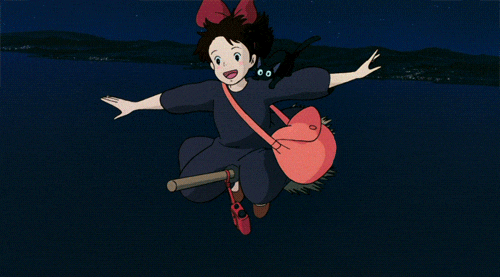

NEWS/STORY/CHARACTER/MOVIE/REVIEW
REVIEW

나는 키키를 보며 큰 위로를 받았다.
13세에 도시에 온 키키는, 오자 마자 미아가 되고, 부족한 게 많아 쫓겨나기 일수다.
키키가 좋은 일을 해도 사람들은 달가워 않고, 비를 맞아 가며 물건을 배달해도 도통 기뻐해 주지 않는다.
마음 대로 되지 않는 키키의 도시 생활이 조그마한 인생 같다는 생각이 들었다.
하지만, 키키는 좌절에 머무르지 않는다.
독립해 낯선 곳에 떨어져서 역경을 거치지만, 천천히 극복하며 어른이 된다.
이런 부분들이 인상 깊었고, 앞으로 어려운 일이 생길 때마다 교훈으로 삼고 싶다!